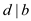
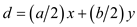
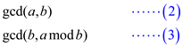

Binary gcd (Greatest common divisor) algorithm
Binary gcd algorithm makes use of computations like testing parity of binary integer, subtraction and halving instead of calculating remainders
a. If a and b are even numbers, then :
Consider a, b both as even numbers. Then the common divisor property can be written as:
Now using property (if and  this implies , the equation given above can also be written as:

Now, taking divisor 2 as common from R.H.S. and take it to L.H.S., the modified equation can be written as:
… … (1)
Now take,
Again using property (if and this implies, the equation given above can also be written as:
As per equation (1), it is clear that:
Thus, from both the equations, there comes a conclusion that
Therefore
When both a and b are even numbers
b. If a is odd and b is even number, then:
Consider a as odd and b as even number. Then the common divisor property can be written as:
Now using property (if and this implies, the equation given above can also be written as:
// as we can always choose an even y
// where z= y/2
Now take,
Again using property (if and this implies, the equation given above can also be written as:

It is described above that
So
This conclude that
When a is an odd number and b is even number
c. If a and b is odd numbers, then:
Consider a, b both are odd numbers. The common divisor property can be written as:
Now using property (if and this implies , the equation given above can also be written as:
Thus we can rewrite the equation as:
// where w = x/2 and z= y–x/2
Now take,
Then,
Again using property (if and this implies, the equation given above can also be written as:
This conclude that
When both a and b are odd numbers
d. Algorithm:
Input: two positive integers say a and b
Output: gcd(a,b)
//if condition to check whether first number is zero
if (a==0)
// greatest common divisor gcd(0, b)=b
return b ;
else
//if condition to check whether second number is zero
if (b==0)
// greatest common divisor gcd (a, 0)=a
return a;
else
//if condition to check whether both numbers are even
if (when both a and b are even)
return gcd (a/2, b/2)
else
//if condition to check whether first number is odd and second number is even
if (when a is odd and b is even )
return gcd (a, b/2)
else
//if condition to check whether first number is even and second number is odd
if (when a is even and b is odd)
return gcd( a/2, b)
//This will be executed when both numbers are odd
else
return gcd ( |a–b|/2, b)
This algorithm uses a complexity of. In above algorithm a and b are two inputs and in which a is greater than b. It is clear from the algorithm given above that the maximum capability of extension is a, which is greater than b. So, the complexity can be measured by.
Bit operations in Euclidean Algorithm:
Paper and pencil algorithm:
• Paper and pencil division algorithm is used to perform the division operation using decimal notations.
• At each stage, there is the shifting of dividend and subtraction of largest divisor from left to right.
• To perform a simple long division operation and to calculate the total bit operations performed, consider divisor as b and the dividend as a.
• Here, a is divided by b as a result of which quotient q and the remainder r are obtained.
There are mainly three operations that are performed in the paper and pencil algorithm. They are as follows:
1. Division operation
2. Calculating quotient operation
3. Calculating remainder operation
Order of operations:
The first operation is division operation where the dividend (a) is divided by the divisor (b).
The total number of bit operations required for each division operation is.
The number of bit operations required to calculate the quotient is equal to .
The number of bit operations required to calculate the remainder is equal to .
Hence, the total number of bit operations required to perform long division operations using “paper and pencil” algorithm is equal to .
The greatest common divisor of any two integer a and b is such that the divisor divides both the integers without leaving any remainder.
The name itself describes that the number should be the greatest and there should be no other greater number which divides both integers without leaving a remainder.
For example:
The gcd of 20 and 130 is 10. The factors of 20 are: (1, 20), (2, 10) and (4, 5). Similarly, the factors for 130 are: (1, 130), (2, 65), (5, 26) and (10, 13). Among both the sets of factors, the common factor is 10. Thus, the gcf of 20 and 130 is 10.
The greatest common divisor is denoted by gcd (a, b) for the two integers a and b.
Here, the Euclidean algorithm is used to calculate the gcd of (a, b), that is, the larger of the two numbers is divided by the smaller one.
In each step, the long division and sliding is followed. The term sliding means that the remainder and divisor move to the left so that they become the divisor and dividend respectively. This process is continued till the remainder becomes 0.
Define the following equation:
In the equation given above, integers a and b are the inputs and and are their running times respectively.

Reduce equation (3) by equation (2). In the reduction process, the basic long divisions and the sliding operation as discussed above are performed.
The running time can be calculated as follows:
Add and subtract 1 in the second parentheses.
Equation (1) can be written as follows:
To calculate the total number of bit-operations, a constant should be multiplied with the equation given above. Suppose that the constant is c, the equation after multiplications is given below:
Hence the number of bit operations to be performed will be for the value of c greater than 0 which is sufficiently large.
Euclid operation with inputs:
Consider r and q as the remainder and the quotient in the long division performed in part a.
The Euclidean algorithm where the division is of the form where the value of i is from and the value of has been set and the value of.
Calculate the total r time as follows:
Apply Backward approach to the Euclidean algorithm, then .
Substitute the above value in equation (4).
From part (b) of the question, .
Using the above equation and the Euclidean expression, the number of bit operations required by is equal to.
From second part of the question, the input for theexpression
is two bits size
numbers.
bits size
numbers.
Hence, the total time taken to calculate the expression is equal to,
(up to time).
Therefore, the total time is equal to for
the input size of
bits.
Three algorithms for Fibonacci numbers are as follows:
• Fibonacci numbers represent a sequence of numbers in which each subsequent number is the sum of previous two numbers.
• The value of number at nth position will be the sum of numbers at n–1 and n–2 positions respectively.
• In Fibonacci numbers, the value of numbers at first and second position is fixed. First number is always 0 and the second number is always 1.
• Fibonacci series: 0, 1, 1, 2, 3, 5, 8, 13, 21, 34… and so on.
a.
Straightforward recursive method for computing Fibonacci numbers:
The straightforward recursive method is used to compute the value of number at a certain position in the Fibonacci series.
The values at positions 1 and 2 are fixed and represented by F0 and F1. The values can be calculated by the equation given below:
This is called recurrence equation because the function F calls itself to calculate the value at a position.
// defining Fibonacci number as long
1. long int f (int n)
2. {
// to check if n is zero
3. if
4. return 0;
//to check if n is 1
5. else if
6. return 1;
7. else
// return the sum the two previous numbers
8. return;
9. }
It is clear from the algorithm given above that the condition for the values at first and second positions are checked, because the values at both positions are fixed.
The sum of two previous numbers is returned. This has been calculated by using recursion (called as recursive method).
In FIB-procedure, a tree for f(n) has been maintained in such a manner that its left child always shows f(n–2) and right child shows value of f(n–1).
This procedure has been followed until the left child becomes f(1) and right child becomes f(0). It is because the values of both of them are fixed. A tree representation of f(4) is given below:
Assume that calls were
made to calculate  .
.
, each term is in form .
Recursion: 
In the equation given above, 2 is added because the node also calls to left child and right child.
This takes up time and it is seen that the time complexity is polynomial. Thus, the running time has the value of n in the exponential form.
b.
Memoization for Fibonacci numbers:
Memoization is an efficient implementation of hash tables.
The values calculated earlier are stored in the table and used later. Memoization is an effective technique to create algorithms.
Let fib memoized = n
Let memo: int option array=Array. Create (n+1) Node in
Let recursive f _memoized n = match memo (n) with
Some
Let result= if then 1
else f memoized  +f
memoized in
+f
memoized in
Memo (n)  some
result;
some
result;
Result
In f_ memoized n
The term f_memoized describes the original recursive algorithm. It also checks whether the result has been already calculated and stored in the table.
The total time taken in a particular call of f_memoized
is .
.
There is a method to bind the recursive calls by observing the ways of the work that has already been done.
The best method to measure progress is counting the number of nonempty entries in the table for each case of memoization.
Every time the f_memoization is called for the two recursive calls, it succeeds and the number of nonempty entries increase by one.
As the table above has only  entries, only
entries, only  calls are required for f _memoization, and
the total running time is
.
calls are required for f _memoization, and
the total running time is
.
c.
Computing Fibonacci value at a certain position:
The Fibonacci value at a certain position can be calculated by considering a matrix and its power. This approach is given below:
If , then
,
n 1
1
Here, is the
nth Fibonacci number and
is the
nth Fibonacci number and defined to
be 0.
defined to
be 0.
F n representation can be given as,
, when n is even
, when n is odd
This dynamic algorithm in form of a mathematical expression is given below:
Let two variables be x and y.
Using matrix multiplication,
It is clear from the above math expression that the right hand side expression is a sub-part to find an nth Fibonacci number. Using the above concept, the expression below gives the exact expression of nth Fibonacci number.
Right hand side expression is expression for a Fibonacci sequence.
This dynamic approach is better than the earlier one because in
computing nth Fibonacci number, this algorithm takes only
 integer
arithmetic expression.
integer
arithmetic expression.
Therefore, computing n th
power of any value requires only
multiplication and te remaining multiplication and addition
takes constant time.
d.
Running time of methods:
Assume that the time taken in addition of two -bit numbers
takes time and
multiplication of two -bit numbers
takes time.
The running time of all the above methods can be calculated as shown below:
For straight forward recursive method:
Let calls are
made to calculate .
, each term is in the form .
As it is assumed that adding two numbers take time, hence, the running time of this method will be a polynomial term,.
For memoization:
In case of memoization, the data that has been obtained is used
for further calculations. Here, the total time will be the sum of
time taken to calculate operations
and . This is
given below:
. This is
given below:
For matrix multiplication: The running time for this method would be as it involves matrix multiplication.
Quadratic Residues
It is a concept related to a number theory. An integer r is called as quadratic residue modulo n if congruent relationship exists for a perfect modulo n. For any integer y there exists a relation given as:

Otherwise r will be termed as a quadratic non-residue modulo n. It has a wide range of application as-engineering related to acoustics, factoring of a large numbers.
According to the question there is variable p which is an odd prime (that is the prime number except 2). It is because prime numbers are the numbers that are divisible by them and by 1. Examples of prime numbers include 2, 3, 17, 31 etc.
A number is termed as a quadratic residue if the equation:
Has a solution for the unknown variable x. This means that a number will be called as the quadratic residue only when the condition given above will be satisfied.a.
As a number to be a quadratic modulo, it should satisfy the condition of. Now, considering the values of x as 1 to prime number p, the quadratic residues are the non-zero numbers which are squares modulo p, so the numbers are as:
After moving further along the residue, the square of the remaining number will start repeating in the reverse order as:
So, there is only requirement to move along the half of the squares. So to show that there is only quadratic
residue. For showing all the numbers are
different modulo p. Consider two number and
which lies
between 1 and. Now,
suppose that and we have
to show that.
quadratic
residue. For showing all the numbers are
different modulo p. Consider two number and
which lies
between 1 and. Now,
suppose that and we have
to show that.b.
In the given question p and a is a prime and quadratic residue modulo. Defined Legendre symbol as function of a and p which is defined as,
It is clear from the equation given above that if the value of is obtained to be equal to 1, then the a is quadratic residue modulo p. Also, (mod p). If the value of is obtained to be equal to -1, then it is quadratic non-residue modulo of prime p. If the value of is obtained to be equal to 0, then . The definition of the Legendre’s symbol as:
Also consider that the value of can have value 0, 1 or -1. It is shown below:
Consider integer a as quadratic residue for modulo p. If its square is non-zero, it means variable x will be there such that. Otherwise it is said to be non-residue. This is characterised with the Euler’s algorithm. It is very efficient in determining the quadratic residue.
c.
To compute the square root modulo of the prime of the
form . Consider
that
. Consider
that  be a
quadratic residue of modulo p. Also it belongs from the
value of integers. It can be given as.Now
considers the following equation:
be a
quadratic residue of modulo p. Also it belongs from the
value of integers. It can be given as.Now
considers the following equation:
Which is the square root of: Such
that
d.
When we perform the repeated squaring we have the condition that mod p. Now, let us assume that A=a and b=1 then at each step we have and at the end we have A=1.
So, a is the square root a mod p. At each step the power of 2 is decreasing by dividing the order of A. so to initiate we have:
if we have
If it is not so then. So power
of 2 dividing the order of a is exactly which is
same as the power of 2 dividing .So,
consider set, and we
found that:
.So,
consider set, and we
found that:
So, power of 2 which divides the order has decreased by 1. So in the next step, we have:
,
If yes do nothing.
Claim that is a square root of A mod p.
So the algorithm just returns:
as .
.
So, a random number is a quadratic non-residue having
probability  so if
k trial is run then probability of not getting a quadratic
non-residue is which is
equal to log p. So, this randomized algorithm is the most
efficient, having the number of operation less than.
so if
k trial is run then probability of not getting a quadratic
non-residue is which is
equal to log p. So, this randomized algorithm is the most
efficient, having the number of operation less than.